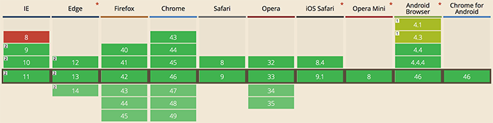

SVG
Created by Roman Samuilov
What is SVG?
Scalable
Vector
Graphics
What is Vector Graphics?
Example
HISTORY
Start of SVG
SVG describe images using vectors, almost without resorting to other solutions. This approach was much more efficient than using raster graphics.

But it was not enough...

2005: Adobe give up SVG
But nothing is eternal...
Nowadays
Why SVG?
Main advantages:
- Scalability
- Interactivity
- Compact file-size
- Flexibility
- SEO friendly
Disadvantages:
- Photo depth
- Possible printing problems
- Drawing speed
Drawing speed